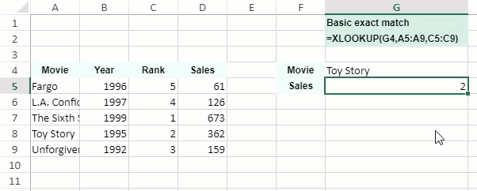
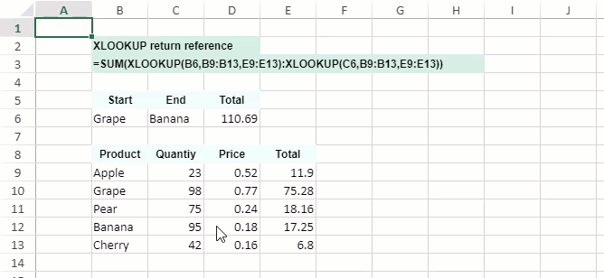

XLOOKUP performs lookups in vertical and horizontal cell ranges and provides support for approximate matching, partial matching (using wildcard characters like * , ? etc.) and exact matching. By default, the XLOOKUP function returns the exact matched results.
The XLOOKUP function is comparatively more flexible and powerful than the rest of the lookup functions (like VLOOKUP, HLOOKUP and LOOKUP etc.). Some more benefits of using XLOOKUP function instead of other lookup functions are listed below:
For instance - By using the XLOOKUP function, users can determine the price of a product by its product ID, find a matching tax rate in a column, search an employee name based on their employee ID and perform many other search operations while working with spreadsheets.
XLOOKUP(lookup_value, lookup_array, return_array, [if_not_found], [match_mode], [search_mode])
This function has the following arguments:
| Argument | Description |
|---|---|
| lookup_value | Refers to the lookup value. |
| lookup_array | Refers to the lookup array or cell range that you want to search. |
| return_array | Refers to the array or cell range that you want to return. |
| [if_not_found] |
[Optional] Refers to the value to be returned when no match is found. If users don't specify this argument, and no matches are found, then the function returns #N/A error. When users specify invalid search mode (For e.g. - 0 in Excel), then #VALUE error will be returned. |
| [match_mode] |
[Optional] Specifies the type of the match as per the following values: 0 - Refers to exact match. If no matches are found, then #N/A error is returned. This is the default match mode. -1 - Refers to exact match. If no matches are found, then the next smaller item is returned. 1 - Refers to exact match. If no matches are found, then the next larger item is returned. 2 - Refers to a wildcard match where *, ? and ~ characters possess special meanings to indicate partial match. |
| [search_mode] |
[Optional] Specifies the mode of the search as per the following values: 0 - Refers to the "search all" mode where all the matched values will be returned. [This mode is not available in Excel.] 1 - Refers to a search that starts at the first item. This is the default search mode. -1 - Refers to a reverse search that starts at the last item. 2 - Refers to a binary search that depends upon the lookup_array argument being sorted in the ascending order. -2 - Refers to a binary search that depends upon the lookup_array argument being sorted in the descending order. |
| not_found | [Optional] This argument can be used to override the #N/A error. Typical values for not_found might be "Not found", "No match", "No result", etc. |
The following points must be kept in mind while working with the XLOOKUP function in the spreadsheets:
Accepts numeric data. Looks up values in a range or table. Returns an array with multiple items.
The following gif shows the basic usage of XLOOKUP function.
The following code snippet depicts the basic usage of XLOOKUP function. In this example, XLOOKUP is used to retrieve Rank based on an exact match on Movie.
| JavaScript |
Copy Code
|
|---|---|
$(document).ready(function () { // Initializing Spread var spread = new GC.Spread.Sheets.Workbook(document.getElementById('ss'), { sheetCount: 1 }); // Enable dynamic array support spread.options.allowDynamicArray = true; // Create style var style = new GC.Spread.Sheets.Style(); style.font = "bold 12px Arial"; style.foreColor = "black"; style.backColor = "#EDFDF4"; style.hAlign = GC.Spread.Sheets.HorizontalAlign.center; style.vAlign = GC.Spread.Sheets.VerticalAlign.center; // Create style var formulaStyle = new GC.Spread.Sheets.Style(); formulaStyle.font = "bold 12px Arial"; formulaStyle.foreColor = "black"; formulaStyle.backColor = "#D3F0E0"; formulaStyle.vAlign = GC.Spread.Sheets.VerticalAlign.center; // Get the sheet1 var sheet1 = spread.getSheet(0); // Set column width sheet1.setColumnWidth(6, 180); // Create formula var formula_Exact = '=XLOOKUP(G4,A5:A9,C5:C9)'; // Set value sheet1.setValue(0, 6, 'Basic exact match'); sheet1.setValue(1, 6, formula_Exact); // Create data var data = [ ["Movie", "Year", "Rank", "Sales"], ["Fargo", 1996, 5, 61], ["L.A. Confidential", 1997, 4, 126], ["The Sixth Sense", 1999, 1, 673], ["Toy Story", 1995, 2, 362], ["Unforgiven", 1992, 3, 159] ]; // Set data sheet1.setArray(3, 0, data); // Set value sheet1.setValue(3, 5, 'Movie'); sheet1.setValue(4, 5, 'Sales'); sheet1.setValue(3, 6, 'Toy Story'); // Set formula sheet1.setFormula(4, 6, formula_Exact); // Set style for (var i = 0; i < 4; i++) { sheet1.setStyle(3, i, style, GC.Spread.Sheets.SheetArea.viewport); } sheet1.setStyle(3, 5, style, GC.Spread.Sheets.SheetArea.viewport); sheet1.setStyle(4, 5, style, GC.Spread.Sheets.SheetArea.viewport); sheet1.setStyle(0, 6, formulaStyle, GC.Spread.Sheets.SheetArea.viewport); sheet1.setStyle(1, 6, formulaStyle, GC.Spread.Sheets.SheetArea.viewport); }); |
|
The following gif shows the SUM and XLOOKUP function works together to sum all the values between two ranges.
The following code snippet depicts the usage of SUM and XLOOKUP function together.
| JavaScript |
Copy Code
|
|---|---|
$(document).ready(function () { // Initializing Spread var spread = new GC.Spread.Sheets.Workbook(document.getElementById('ss'), { sheetCount: 1 }); // Enable dynamic array support spread.options.allowDynamicArray = true; // Get the sheet7 var sheet7 = spread.getSheet(0); // Set text sheet1.setValue(1, 1, 'XLOOKUP return reference'); sheet1.setValue(2, 1, '=SUM(XLOOKUP(B6,B9:B13,E9:E13):XLOOKUP(C6,B9:B13,E9:E13))'); sheet1.addSpan(1, 1, 1, 3, GC.Spread.Sheets.SheetArea.viewport); sheet1.addSpan(2, 1, 1, 7, GC.Spread.Sheets.SheetArea.viewport); sheet1.setValue(4, 1, 'Start'); sheet1.setValue(4, 2, 'End'); sheet1.setValue(4, 3, 'Total'); sheet1.setValue(5, 1, 'Grape'); sheet1.setValue(5, 2, 'Banana'); // Create data var data = [ ["Product", "Quantiy", "Price", "Total"], ["Apple", 23, 0.52, 11.9], ["Grape", 98, 0.77, 75.28], ["Pear", 75, 0.24, 18.16], ["Banana", 95, 0.18, 17.25], ["Cherry", 42, 0.16, 6.8] ]; // set data sheet7.setArray(7, 1, data); // set formula sheet7.setFormula(5, 3, "=SUM(XLOOKUP(B6,B9:B13,E9:E13):XLOOKUP(C6,B9:B13,E9:E13))"); // set style for (var i = 1; i < 5; i++) { sheet7.setStyle(7, i, style, GC.Spread.Sheets.SheetArea.viewport); } for (var i = 1; i < 4; i++) { sheet7.setStyle(4, i, style, GC.Spread.Sheets.SheetArea.viewport); } sheet7.setStyle(1, 1, formulaStyle, GC.Spread.Sheets.SheetArea.viewport); sheet7.setStyle(2, 1, formulaStyle, GC.Spread.Sheets.SheetArea.viewport); }); |
|